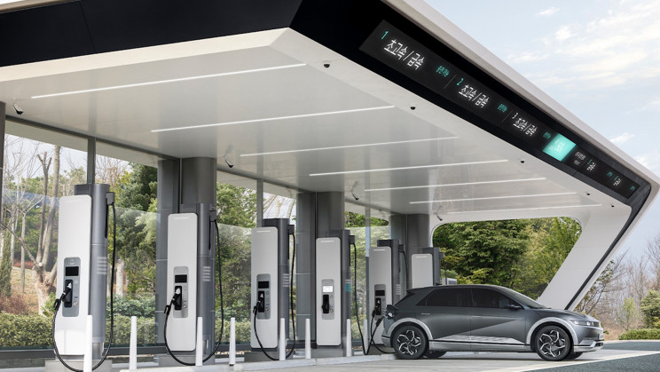

Delhi Charging Stations
The Delhi EV Policy is committed to creating an enabling environment for the provision of private and public charging/swapping infrastructure. A working group for accelerated roll-out of charging infrastructure in Delhi was constituted, responsible to develop the strategy for Delhi to create a network of charging stations in the city.
The Delhi EV Policy commits to create an enabling environment for the provision of private and public charging/swapping infrastructure through progressive incentives and policy provisions. In fact, Delhi has been on the forefront to take cognizance to work towards accelerated deployment of charging infrastructure in the city. To this end, the Delhi Government constituted a Working Group for Accelerated Roll-out of Charging Infrastructure in Delhi; which is an inter departmental, multi-agency body responsible to develop the strategy for Delhi to create a network of charging stations in the city. The Working Group has representatives from the Power Department, Transport Department, all Municipal Corporations and is chaired by the Vice-Chairperson of the Dialogue and Development Commission of Delhi.
You can find out your nearby charging station -
South Delhi
- A-1/1, Hardev Puri, 100 ft Road, Nathu Colony Chowk, Sahadara
Timing 10:00:00 - 21:00:00
- Plot no. 1-A, Shiv vihar, Nangloi
Timing 10:00:00 - 21:00:00
- 9/17, Near Chajju Gate, east babarpur, Shahdara
Timing 06:00:00 - 21:00:00
- E-473, New Ashok Nagar
Timing 09:00:00 - 21:00:00
North Delhi
- Kalindi kunj Road Jaitpur
No. of connectors 1
Timing 13:00:00 - 21:00:00
- N118/R6, Wazirpur Village Ashok Vihar Phase 1
No. of connectors 1
Timing 14:00:00 - 21:00:00
- sector 14 rohini
No. of connectors 1
Timing 13:00:00 - 21:00:00
- 2466 roshnara road subzi mandi delhi
No. of connectors 1
Timing 24 hours
East Delhi
- 175, Patparganj Industrial Area, Patparganj
No. of connectors 2
Timing 08:00:00 - 21:00:00
- B-50/9, Haruan Basti, Kondli
No. of connectors 1
Timing 07:00:00 - 21:00:00
- Plot No Musddi Chowk, Sarai Kale Khan Hazrat Nizamuddin
No. of connectors 1
Timing 11:00:00 - 21:00:00
- H.no. 16, Gali no 2, Jagat Puri
No. of connectors 1
Timing 12:00:00 - 21:00:00
West Delhi
- M block Market Gearter Kailash 1
No. of connectors 1
Timing 13:00:00 - 21:00:00
- 237, New Seelampur Shahdara
No. of connectors 1
Timing 14:00:00 - 21:00:00
- Opp. Karbala, Mochi park, mayur Vihar 1, Pocket 2, Kotla Village
No. of connectors 1
Timing 04:00:00 - 21:00:00
- RZG-45, 50 ft road, Nihal Vihar, Nangloi
No. of connectors 1
Timing 16:00:00 - 21:00:00
Click HereTo know more about Delhi Carging staions